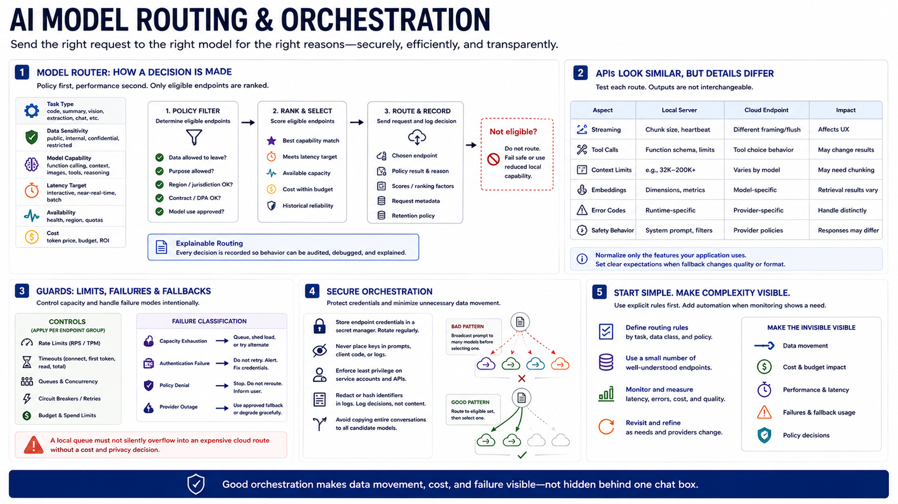

Model Routing and Orchestration
Connecting to LMS... Progress: in progress

Narration
A model router selects an endpoint using task type, data sensitivity, model capability, latency target, availability, and cost. The eligible set should be determined by policy before performance ranking. A cloud model that would answer best is not eligible if the prompt contains data that cannot leave. Record the route and policy result so behavior can be explained.
Local servers and cloud endpoints may expose similar APIs, but details differ across streaming, tool calls, context limits, embeddings, error codes, and safety behavior. Normalize only the features the application uses and test each route. Model outputs are not interchangeable, so fallback may change quality or format. Clients need clear expectations when service is degraded.
Apply rate limits, timeouts, queues, and concurrency controls separately for local capacity and paid endpoints. A local queue should not silently overflow into an expensive cloud route without a cost and privacy decision. Fallback logic must distinguish capacity failure, authentication failure, policy denial, and provider outage. Some failures should stop the request instead of rerouting it.
Protect endpoint credentials and keep them out of prompts, client code, and logs. Avoid orchestration that copies entire conversations to every candidate model before selecting one. Start with explicit routing rules and a small number of endpoints. Add automation only when monitoring shows a recurring placement need. Good orchestration makes data movement, cost, and failure visible rather than hiding complexity behind one chat box.